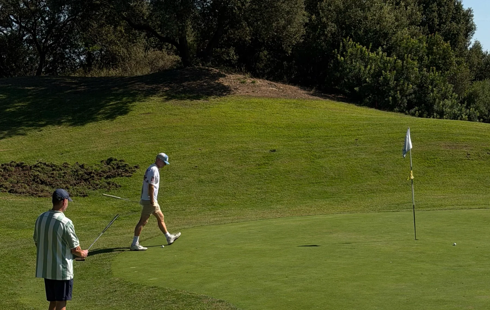

I daglig tale er best ball det samme som fourball: I er to på hold, hver spiller sin egen bold, og holdets score på hullet er den bedste af jeres to.

Hvordan spilles fourball?
- I spiller hver jeres bold. Begge spiller hullet færdigt, som I plejer.
- Den bedste score tæller. Holdets score på hullet er den laveste af jeres to. Med handicap er det den bedste nettoscore.
- I bestemmer selv rækkefølgen. Golfreglerne lader jer spille i den rækkefølge, I synes er bedst.
- Vælg slagspil, stableford eller hulspil. Fourball kan spilles i alle tre.
Er best ball og fourball det samme?
I daglig tale, ja. I golfreglerne betyder best ball noget andet: en spiller spiller alene mod et hold på to eller tre, hvor holdets bedste score på hullet tæller. Fourball står i golfreglernes regel 23.
Hvordan regnes handicap i fourball?
Dansk Golf Union anbefaler, at hver spiller får 85 procent af sit spillehandicap i slagspil og stableford. Har du spillehandicap 20, spiller du på 17 slag.
I hulspil spiller den med det laveste spillehandicap fra nul slag, og de andre får 90 procent af forskellen.
Tæller fourball til handicap?
Som regel ikke, for i Danmark skal en tællende runde være individuel. Der er en undtagelse i en fourball-turnering over 18 huller: holdet skal have mindst 42 point, din egen score skal tælle på mindst 9 huller, og du skal selv have mindst 36 point.
Hvilke spilleformer kan vi spille i Golfsocial?
I dag stableford og slagspil. Appen regner med hver spillers handicap, så I kan spille om det samme, selv om I ikke har samme handicap.
Når runden er slut, kommer den i feedet, hvor vennerne kan følge med og kommentere.

Spørgsmål og svar
Hvad er best ball i golf?
I daglig tale det samme som fourball: I er to på hold, hver spiller sin egen bold, og den bedste score på hullet tæller for holdet.
Hvad er reglerne for best ball?
I spiller hver jeres bold, holdets score på hullet er den laveste af jeres to, og I må selv vælge rækkefølgen. Fourball står i golfreglernes regel 23.
Er best ball og fourball det samme?
I daglig tale, ja. I golfreglerne er best ball en form, hvor en spiller spiller alene mod et hold på to eller tre.
Hvordan regnes handicap i fourball?
Dansk Golf Union anbefaler 85 procent af spillehandicappet i slagspil og stableford og 90 procent af forskellen i hulspil.
Tæller fourball til handicap?
Som regel ikke. Undtagelsen er en fourball-turnering over 18 huller, hvor holdet har mindst 42 point, og du selv har mindst 36 point og tæller på mindst 9 huller.
Hvad er forskellen på fourball og foursome?
I fourball spiller I hver jeres bold. I foursome deler I én bold og skiftes til at slå.
Golfsocial-appen
Dit golfhjem
Registrér dine runder til dit DGU-handicap, følg din udvikling, og se vennernes runder i feedet. Gratis at spille med vennerne, på iPhone og Android.